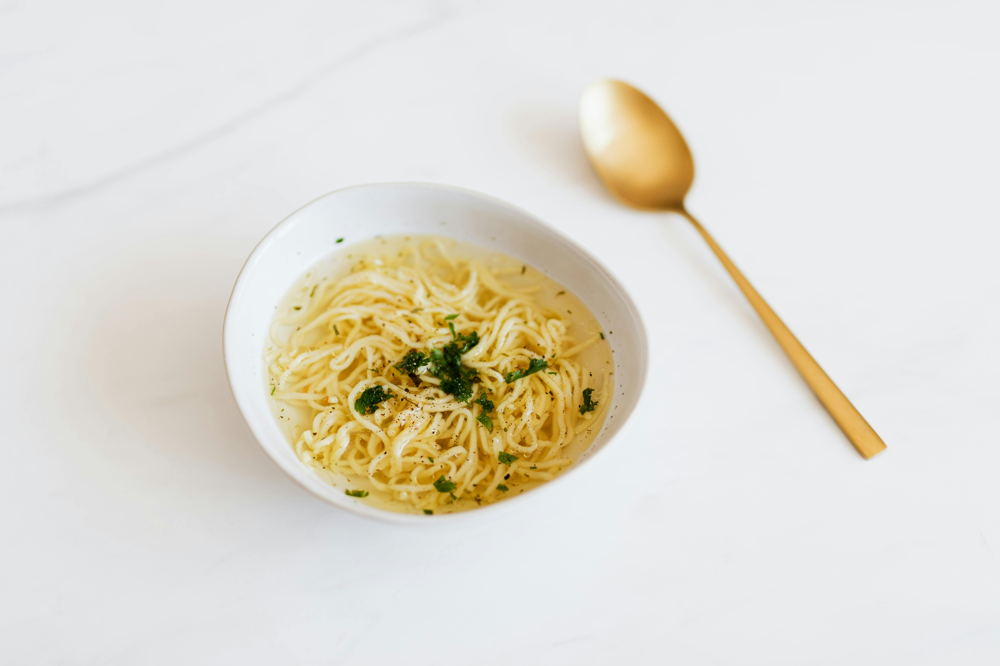
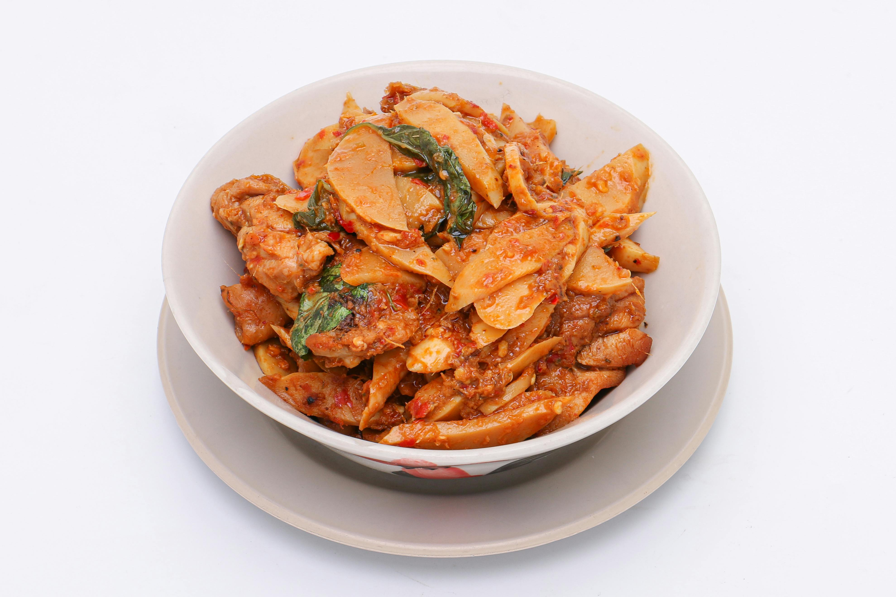

Famous Foods of Arunachal Pradesh
Thukpa

Thukpa Recipe (English):
- Ingredients:
- 200g noodles
- 1 onion, chopped
- 1 carrot, chopped
- 1/2 cup cabbage, shredded
- 200g chicken, sliced
- 1 tablespoon soy sauce
- 1 teaspoon ginger-garlic paste
- Salt and pepper to taste
- Instructions:
- Boil the noodles as per the instructions on the package. Drain and set aside.
- Heat oil in a pan and sauté the onions, ginger-garlic paste, and chicken until the chicken is cooked.
- Add the carrots and cabbage and cook for a few minutes.
- Pour in 4 cups of water, add soy sauce, salt, and pepper, and bring to a boil.
- Add the noodles to the broth and let it simmer for 5 minutes.
- Serve hot, garnished with fresh herbs.
Bamboo Shoot

Bamboo Shoot Recipe (English):
- Ingredients:
- 200g bamboo shoots, sliced
- 2 tablespoons mustard oil
- 1 onion, chopped
- 1 teaspoon turmeric powder
- 1 teaspoon red chili powder
- Salt to taste
- Instructions:
- Heat mustard oil in a pan and sauté the onions until they turn golden brown.
- Add the bamboo shoots and cook for 5 minutes.
- Sprinkle turmeric powder, red chili powder, and salt. Mix well.
- Cover the pan and let it simmer for 10 minutes or until the bamboo shoots are tender.
- Serve hot with steamed rice.